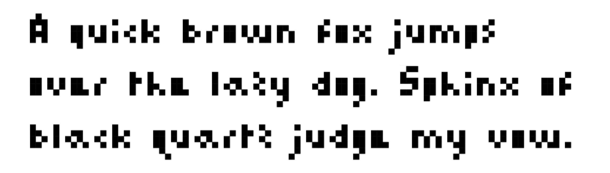
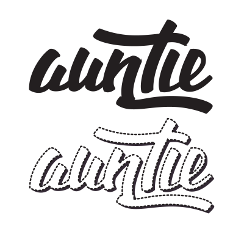
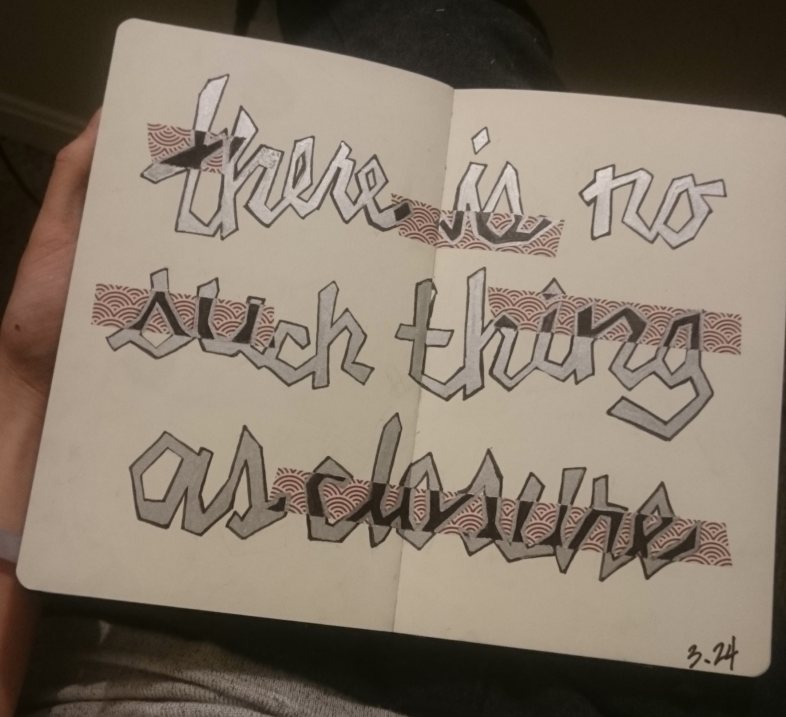
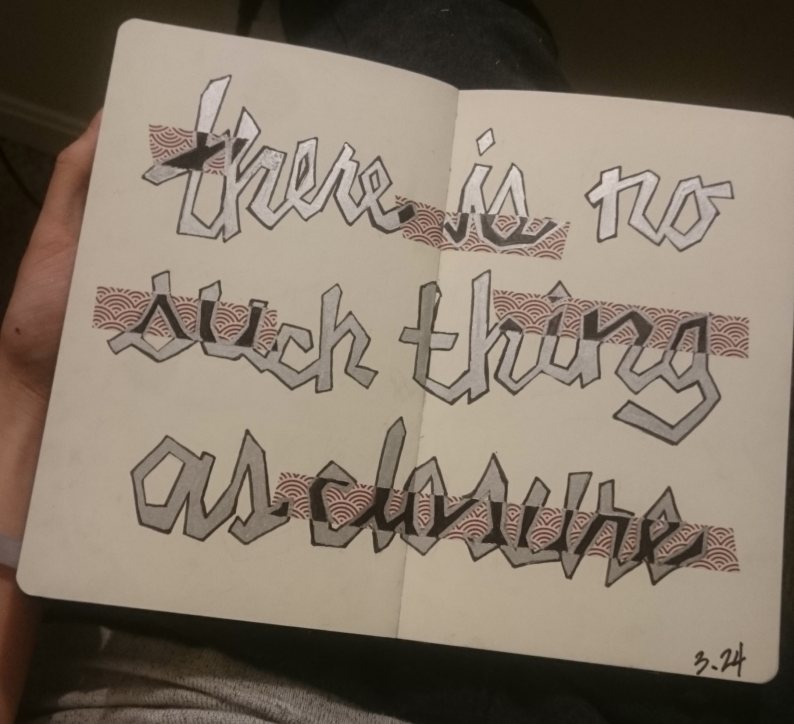

SWEET FONT // download

Thanks to FontStruct, I was able to produce a font for my game, SWEET.exe.
I kept the style very minimal to match the look and feel of the game. At first, I tried to convey each character with as few pixels as possible, but I found that it would take away from the "charm" of the font. Instead, I followed a few guidelines I set for myself:
- Lowercase character must be a minimum of 3 pixels and a maximum of 4 pixels high
- Uppercase characters must be exactly 5 pixels high
- No two characters should look the same
DIGITAL SCRIPT

Much of the calligraphy you see in my portfolio was created when I was just learning how to use Illustrator for lettering and type. As an artist, I was much more familiar in working with rasterized formats, but I've since become much more proficient with directly working in illustrator, rather than simply using the trace tool.
BRUSH PEN (OLD)
I recently got the hang of using pen and ink and hope to be at the level where I use these skills in my freelance work (and obviously, my portfolio). Using a brush pen is my method of choice when I letter. After writing "minimum" about 200 times, I was finally able to grasp the technique. The prevalence of this style of calligraphy does concern me though, and I do wonder if it's a fad that will die soon.
BLOCK LETTERING (OLD)
 

This style was inspired by graffiti. It is a relatively simple process to put together the linework for this type of typography, but quite time consuming to get it just right